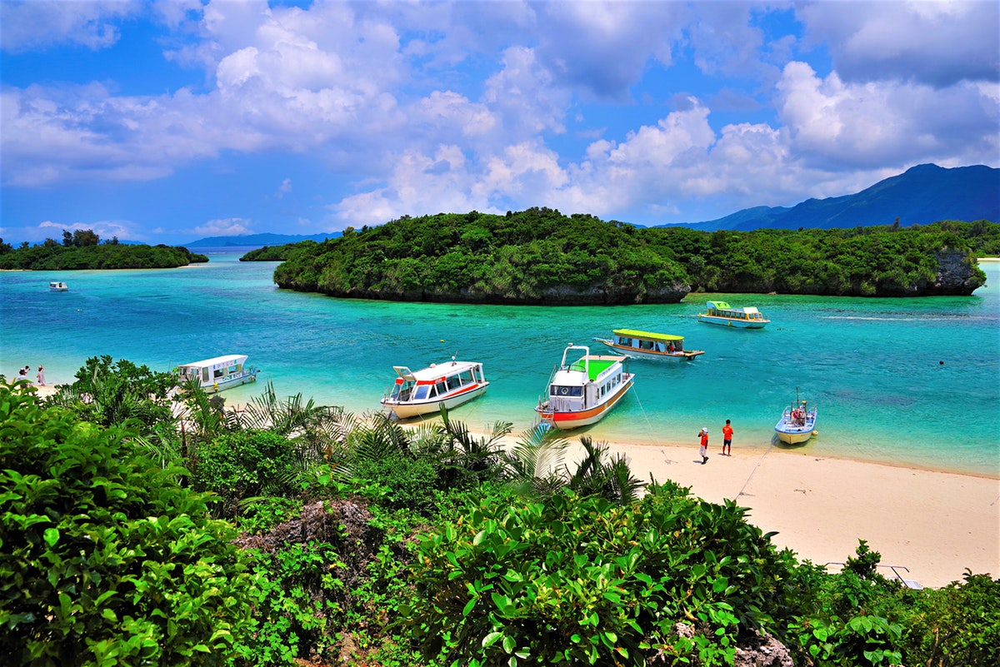
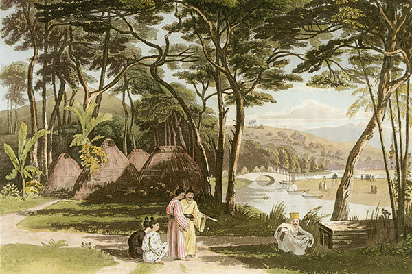
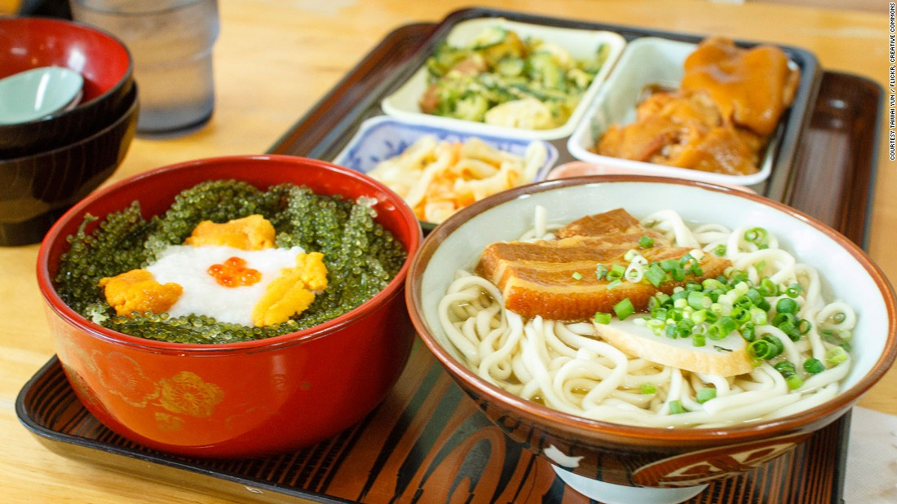
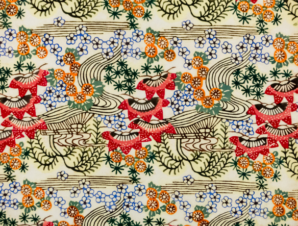
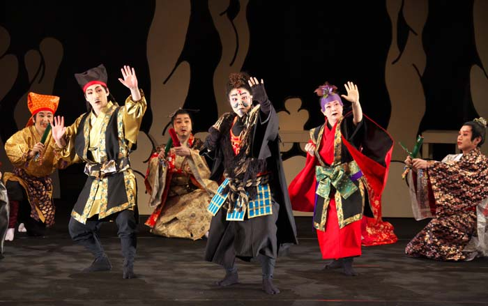
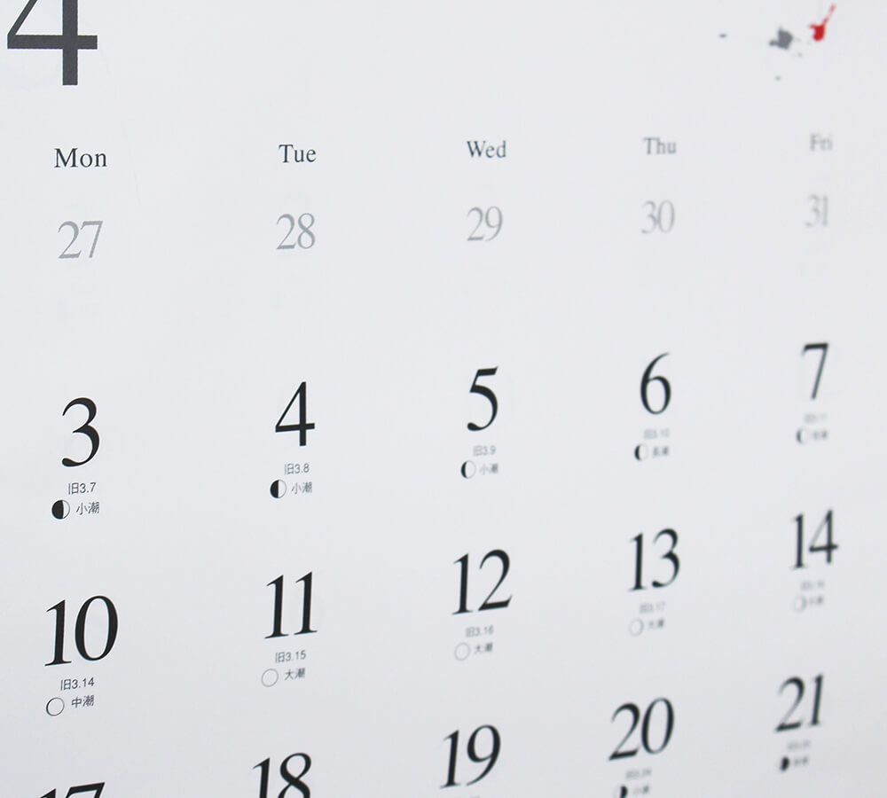
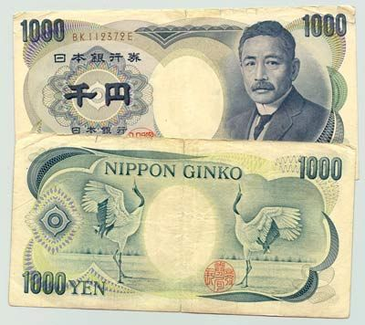
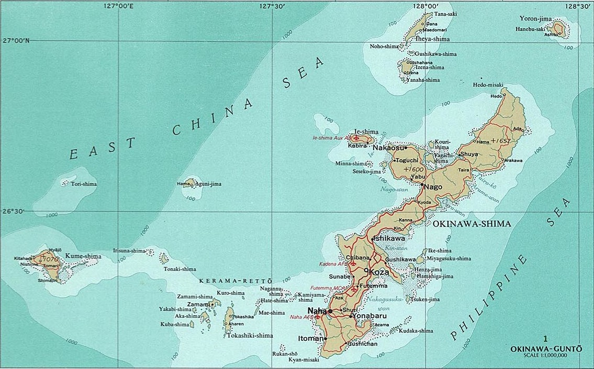

Travel to Okinawa
Overview of Okinawa
One of the 47 prefectures of Japan. It is comprised of over 160 islands, 47 of which are inhabited remote islands. *As of January 2018 Administration of the prefecture is divided among 11 cities, 11 towns, and 19 villages. Japanese is the main language in Okinawa, but English is understood at many tourist facilities and hotels. The Okinawan Islands are surrounded by the East China Sea and the Pacific Ocean, and consist of the Miyako Islands, Yaeyama Islands, and others. Their location provides convenient access to the mainland Japan and several regions throughout Asia.
History of Okinawa
There are several theories surrounding the origin of the Minatogawa people who are believed to have lived in Okinawa 22,000 years ago, one suggesting China being their origin while others speculating their origin to be Indonesia, Australia, and other regions. Life was centered on hunting, gathering, and fishing during the Shell Mound era, which lasted until around the 10th century. After the establishment of Okinawa Prefecture in 1879, the Japanese central government appointed Naoyoshi Nabeshima to become the first governor. Okinawa underwent modernization during that period, but a fierce ground battle unfolded during WWII that involved the general population, causing severe damage both, in terms of human lives and culturally.In 1945, as WWII came to a close, Okinawa was placed under American rule, and until it was reverted to Japan on May 15, 1972, it went through a different history from that of the Mainland with heavy influence from the United States. Today, Okinawa is highly received as one of the leading resort destinations in Japan by not only domestic travelers but also international travelers.
Food Culture
The traditional cuisine of Okinawa was developed during the Great Trade era of the 14th century through 16th century in the Ryukyu Kingdom to cater to Chinese envoys dispatched by the Chinese emperor, and it has since continued to evolve with influences from Japan and China among other Asian countries. The dishes are devised to be nutritionally balanced, combining the essence of ingredients rich in vitamins, such as bitter gourd and loofah, with pork that has been carefully prepared to break up the fat over a long period of time. The wisdom of ancestors who ate well and lived healthy lives remain in spirit in the traditional cuisine of Okinawa. After the war, American food culture, represented in the “”canned pork,”” made its way into the diet and continues to be cherished to this day. Okinawan food culture openly accepted the influences brought upon by the changing times and is today a unique food culture that has created a variety of dishes.
Traditional Arts
Okinawa openly accepted the knowledge and skills gained through trade and exchanges with Japan and China as well as other East and Southeast Asian countries during the Great Trade era, which spanned between the 14th and 16th centuries, and incorporated it with the natural climate to form the foundation on which its unique culture has developed. Performing arts such as playing the sanshin and dancing were developed at banquets to cater to the Chinese envoys while kumiodori came from the influence of noh and kabuki from Japan during the 18th century. Crafts were refined with improved quality and skills to pay tribute to the Edo shogunate in the 17th century. READ MORE
Traditional Performing Arts
Passed down through generations, Okinawa’s traditional performing arts are steeped in history and tradition. The traditional performing arts of Okinawa are quite diverse, ranging from dance to music and plays. Many of these arts originate from a time when Okinawa prospered as the Ryukyu Kingdom and have since been passed down through history to the present day. Here is an introduction to Okinawa’s traditional performing arts, which have evolved on their own while also being influenced by ancient Chinese and Japanese cultures and customs.
The Old Calendar & Annual Events
Many of the events which take place in Japan are based on the solar calendar, but in Okinawa, events and religious ceremonies also follow what is known as the old (lunar) calendar. Both of these calendars have become indispensable, and are now used alongside each other in everyday life.The old calendar is a measure of time which is based on the lunar calendar, following the waxing and waning of the moon. It is believed to have been used in olden times to determine the changes in the natural environment, allowing locals to decide the appropriate time for fishing, planting, and harvesting. However, the four seasons do not align with the lunar calendar. This was solved by combining it with 24 solar terms which represent the seasonal changes that take place roughly every half month. This is the old calendar, also known as the “lunisolar” calendar. READ MORE
Currency
Okinawa uses the Japanese yen (as of May 2016, $1 CDN = approx. 83 JPY). Credit cards may not be accepted as widely as at home, so be advised to have sufficient yen at all times. Okinawa has 26 currency exchange machines that allow travellers to deposit foreign cash and receive Japanese yen back. The eight foreign currencies currently accepted include U.S. dollars, Chinese yuan, Taiwanese dollars, Korean won, Hong Kong dollars, Australian dollars, British pounds and euros.
Top Destinations in Okinawa
- Yaeyama Islands - Okinawa's southermost island group
- Okinawa Island - Okinawa Prefecture's main island
- Miyako Island - Subtropical island with excellent beaches
- Kerama Islands - Small island groups with beautiful beaches
- Kume Island - Small island west of Okinawa Honto